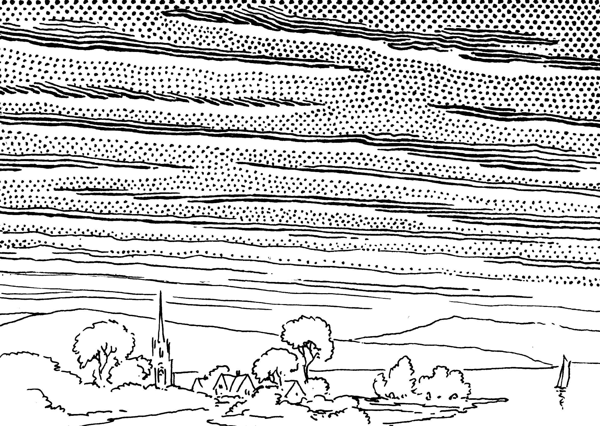
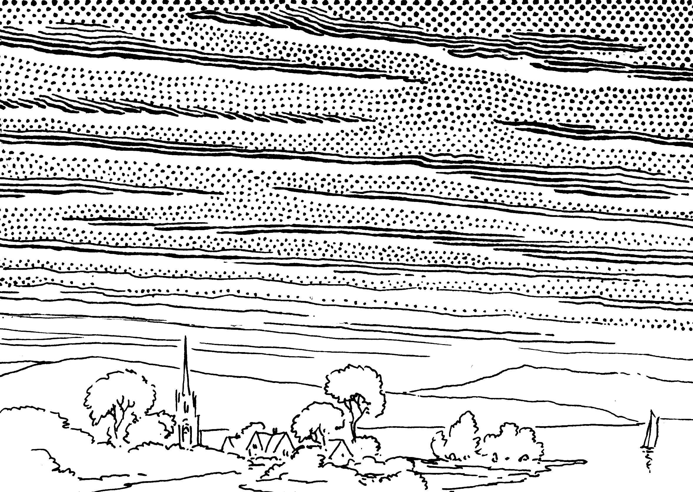

The Mind That Contemplates
David Hume understood something in 1757 that most of us are only now beginning to grasp: value is not a property of things but a quality of the mind.
"Beauty is no quality in things themselves: it exists merely in the mind which contemplates them."
Value is, in other words, subjective. That doesn't mean it's arbitrary, nor purely relative. Most people hear "value is subjective" and wrongly think that all opinions are equal. You do you and I'll do me, don't judge me, that's just, like, your opinion, man.

The Big Lebowski (1998)
Hume rejects this, and that rejection may be one of the most important things to understand when it comes to the future of AI, work, and the economy.
A Better Palate
Hume argues that while value originates in the mind, some minds are better at perceiving (or perhaps creating) value than others, just as some palates are better at detecting flavor.
In other words, some people are better at judging quality and creating value. This isn't because they have access to some kind of universal truth. It's because they possess a few very specific things that, according to Hume, make them rare and better positioned to judge taste.
- Refined senses, sharpened through exposure.
- Decades of experience with the thing being judged.
- A freedom from bias or outside pressure.
- And what Hume called "good sense" — the capacity to weigh parts against wholes.
If you have these, you're better positioned to create (and judge) quality, according to Hume. Said another way, some people's judgment is better than others (and therefore more valuable).

The author, demonstrating taste.
 

All That is Solid Melts into Air
This matters a lot now, and will matter a lot more in the future, because of AI.
Here is my thesis:
- Large language models are driving the value of knowledge toward zero. Not slowly, not eventually — now. An LLM can retrieve, synthesize, and articulate essentially everything that has ever been written — all human knowledge — on demand.
- Agents, meanwhile, are driving the value of managerial work to zero — commoditizing the coordination, sequencing, and execution that once justified entire professional hierarchies, entire buildings full of people.
If knowledge was the what then management was the how, and both are being commoditized at once.
This is a big deal.

Giovanni Paolo Pannini, Capriccio of Classical Ruins
The Great Repricing
For most of modern history, value flowed to those who could accumulate and deploy specialized information and from those who could not.
Consulting, law, medicine, finance — these industries are built on this asymmetry. The consultant knew what the client did not. The doctor had studied what the patient had not read.
That is changing.
In software, if agents can build any application on demand, the product itself stops being defensible. What becomes defensible is the taste layer on top — the curation, the specific point of view about how a tool should feel and what it should prioritize. When any agent can spin up a competent tool in minutes, choosing software becomes less like purchasing infrastructure and more like choosing what to wear.
In consulting, any executive can now generate a McKinsey-quality analysis in an afternoon. What they can't generate is the senior partner's hard-won instinct that the real problem isn't market entry at all — it's that the CEO and CFO have fundamentally different visions and no framework will matter until that's resolved. The consulting firm of the future looks less like McKinsey and more like a blue-chip gallery: a small roster of trusted advisors whose clients are hiring them, not the logo.
The same fracture opens across law, finance, medicine — every knowledge industry.
Both knowledge and management are becoming like air: essential, but not scarce, and therefore not a source of differentiation or value creation.
What Becomes Rare?
"The best things in life are free. The second best things are very, very expensive."
Coco Chanel
So what remains? What will be valuable in a world of AI?
Hume spent his career trying to answer this question. His answers were taste, judgment, and trust.
Taste. When a system can generate a thousand adequate solutions in an hour, the person who can look at all thousand and say this one, because it has the right weight and tone for this moment becomes the bottleneck. Hume was emphatic that this capacity is not arbitrary preference — it develops through experience, comparison, and what he called "delicacy of sentiment." It cannot be shortcut. If it could be formalized into rules, it would itself become knowledge and be commoditized in turn.
Judgment. Judgment is taste applied to action under genuine uncertainty. Should the company prioritize growth or stability? Should the policy favor efficiency or equity? An LLM can provide every argument on every side. An agent can model every scenario. But someone has to decide, and that decision draws on a sense of proportion, of what matters, of what the moment demands — capacities reason cannot provide on its own.
Trust. In a world where anyone can generate convincing text, realistic images, and plausible-sounding analysis — where the surface markers of competence are trivially reproducible — trust becomes the scarce verification layer. You don't just need someone with good taste; you need someone whose taste you trust, whose track record you know, whose judgment has been tested against reality. Trust is the social infrastructure that makes taste and judgment actionable.
This is what remains.
Life Imitates (the Art Market)
The art world has understood this for centuries.
A painting is, materially, canvas and pigment. The physical inputs are worth almost nothing. And yet a Basquiat sells for $110 million while a technically superior painting by an unknown artist sells for $400 at a street fair. This is not a market mispricing. It is a market that has correctly identified what's scarce.
The scarce thing is not the object. It's the chain of judgment (and trust) surrounding it: the artist's vision, the curator who recognized it early, the gallery that staked their reputation on showing it, the critic whose essay framed why it mattered, and the collector whose willingness to pay became its own signal of worth. Every transaction in the art market is a transaction based entirely on, and further compounding, trust and taste.
Larry Gagosian doesn't run the world's most powerful gallery because he has more information about art than anyone else. He runs it because enough people with enough capital trust his taste.
His judgment is the product. Everything else — the white-walled spaces, the glossy catalogs, the Venice Biennale dinners — is just infrastructure for delivering it.

Jean-Michel Basquiat, Untitled (1982). Sold for $110.5 million.
The Rest Was Just Scaffolding
Hume would say this was always the foundation of value. We just built elaborate systems — schools, professions, bureaucracies — that obscured it by bundling taste and judgment together with knowledge and execution. AI unbundles that. What's revealed when you strip away the commodity layers is what he always said was underneath: sentiment, refined by experience, made social through trust.

Katsushika Hokusai, The Great Wave off Kanagawa (c. 1831)
The rest was just scaffolding.